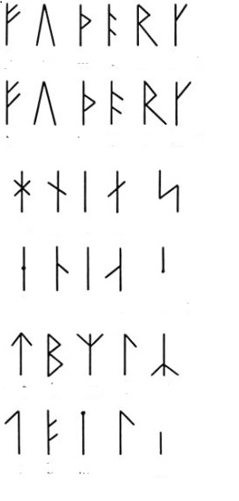

This year's theme is
MAGNUS CHASE AND THE GODS OF ASGARD
(scroll down for earlier weeks)
Week 8 Adventures
JAMBOREE! Today marked the conclusion of the Magnus Chase adventure. To save the world and postpone Ragnarok, the kids needed to change the rope on Fenrir. Three Freeheelers guards brought in Fenrir and took him down to the field and put in him in a tent for safety. The rest of the Freeheelers were named Einherjar by Odin and were sent to the fields to do an epic battle is foretold to be part of Ragnarok.The Little Nords had recovered the new rope for Fenrir in the morning and had to take it down to the field and once round Fenrir's tent. Now all they had to do was replace the rope. Alas Fenrir is fierce. The Little Nords used the rune coins to decode Magnus' note. The discovered that Fenrir will sleep if sung to. They all sang Twinkle Twinkly Little Star. Fenrir fell asleep and one very brave Little Nord entered the tent and switched the rope on the sleeping Fenrir. Yeah!! All was saved and the games could begin.
Here are a few pictures.


Week 7 Adventures
This week was dedicated to an extensive search of the upper area. The lower Little Nord skied out Cold Creek and stayed out over lunch to get farther up the trail. Up top, the Little Nords all skied out Hidden Valley on a big 3 group adventure. They were joined by most of the Freeheelers. This week's page from Magnus' journal was about Loki. While I don't have pictures, the Little Nords ran into a group of Freeheelers who had captured FENRIR!! Yes FENRIR the wolf. They were holding him captive in a tent since his rope is getting worn. We will need to replace it at the Jamboree on week 8.Eli, Glenn, and Brigit's group head towards Hidden Valley and do some adventuring enroute.


On Cold Creek just before Fenrir was discovered

One of the Freeheelers who had captured Fenrir.

Week 6 Adventures
The Golden Boots have been lost again!! Freeheelers really need to do better protecting them. So the Little Nords are off in search of them again. Up top the Freeheelers were warned about the mischievious color elves. Alas they did run into them. This week's page from Magnus' journal was about Thor.Chad's group discovers the Freeheelers who have been ambushed by the color elves. They revive them with valentine hearts.


A group of Freeheelers who were ambushed by color elves

Eli after color elf ambush.

Josh after color elf ambush.

Week 5 Adventures
 The search continues for more runes to decode Magnus Chase's message. Eli's group found the old door to Narnia near Union Station and everyone went through it and to Narnia for a bit. This week the pages from Magnus' journal were about Sif.
The search continues for more runes to decode Magnus Chase's message. Eli's group found the old door to Narnia near Union Station and everyone went through it and to Narnia for a bit. This week the pages from Magnus' journal were about Sif.
Finding some curious drawings during the storm.

Heading along the power lines during the storm.

Heading through the door to Narnia.

Door to Narnia.

Week 4 Adventures
The lower area Little Nords were working on finding more rune coins. While some searched around the lodge and Cold Creek, Eli's group headed to the Silver Fir lift and skied the cross-over back to Hyak. They were tracking some fishy smelling guys with beards (Njord's helpers for sure) and they found some beads and rune coins. Other groups found some more pages from Magnus' journal. This page is about Njord.Reading a note that was brought in the morning.

But the BIG!! news is that Skaði's golden shoes have been found!! Apparently the Freeheelers had found them, but they were waylaid by the villians in black and white cloaks. The villians captured the Freeheelers and wouldn't let them go until the Little Nords answered some very difficult riddles. I heard they had to get help from the instructors.

Week 3 Adventures
We were visited by Bard the poet of Aasgard! The Little Nords had to sing songs and do dances to get rune coins from Bard.Bard and his black cloaked helpers!

Bard arrives at Grand Junction and asks for songs. Josh translates because Bard only speaks a very archaic version of Icelandic or maybe it is Vikingese.

The Little Nords sing songs and do a little dance for their rune coins.

Rune coins.

The Little Nords also discovered another page from Magnus' diary.
Week 2 Adventures
Morning msg from Magnus via Karina.So I talked to Magnus and he said he had told Skaði (the ski goddess) how to get in contact with you, so a messenger should arrive soon from her. He also said that he sent some notes about Skaði that he had to you, so keep an eye out for those. He gave the notes to a bird, and told it to drop them off at Hyak. Keep a look out for them; not sure where the bird would have dropped them since 'Hyak' could be lots of places. The message the gods sent to us is taking longer to decipher then we thought. I think I need some kind of code.
Karina
Note from Eli: one of the Little Nords is a speaker of Icelandic and let me know that I have been butchering the pronouciation of Skaði. She is the goddess of bowhunting, skiing, winter, and mountains who we are assisting. I was obviously mortified to learn this and will work diligently over the week to improve my Norwegian/Icelandic pronouciation. Here's how her name is supposed to sound (Click speaker in lower left).After Eli read the note, some messengers from Skaði arrived! And they delivered this note:

The Little Nords working in the lower area and on Cold Creek searched for the notes from Magnus' journal. They found jewels along the way and they found the journal pages!! Here's a copy.

Magda and Tin took 12 intrepid Little Nords up top to search for the journal pages there. They searched the alpine trails by riding the Silver Fir chair up, then skiing down White Rabbit all the way back down, and riding the lift back up. They did not find the journal pages but it's good they went up top because they saved the Freeheelers! The Freeheelers were looking for the map (see Karina's email) all over up top, found it, and were taking it down. But they were waylaid by map thiefs and collapsed on the snow in magical unconsciousness. Fortunately, Magda and Tin's kids were nearby and chased off the mysterious villians before they were able to grab the map. The kids revived the Freeheelers with gummy bears and magical beads!


Here's the map that the Little Nords brought down from up top:

The map has something that says 'The Code'. I have no idea what that could be. Maybe some of the kids will have an idea.

Week 1 Adventures
Eli received an email from Karina (JNP alum & coach now at college):
Hey Eli!
I miss all you guys so much and I hope the snow is great! You'll never guess the news I have from college. So there's this guy in my Norwegian History and Literature class, and were now best buds, and this guy just so happens to be MAGNUS FREAKING CHASE!!!!!!! WHAAAAA!?!?! so cool right? And he just got this urgent message, from the real, actual Norse Gods (no biggy or anything 0_0 ) Anyway turns out they're in the Washington area and they need help (something about the fate of valhalla in the balance, haven't translated the whole note yet). Heres the thing Magnus can't just up and leave school things are super busy here, so I told him all the about the JNP and how y'all can handle anything. He said he'd let the Ski goddess (Skaði) know to get in touch with you.
Karina
ps. I'll send along the gods note once I finish deciphering it